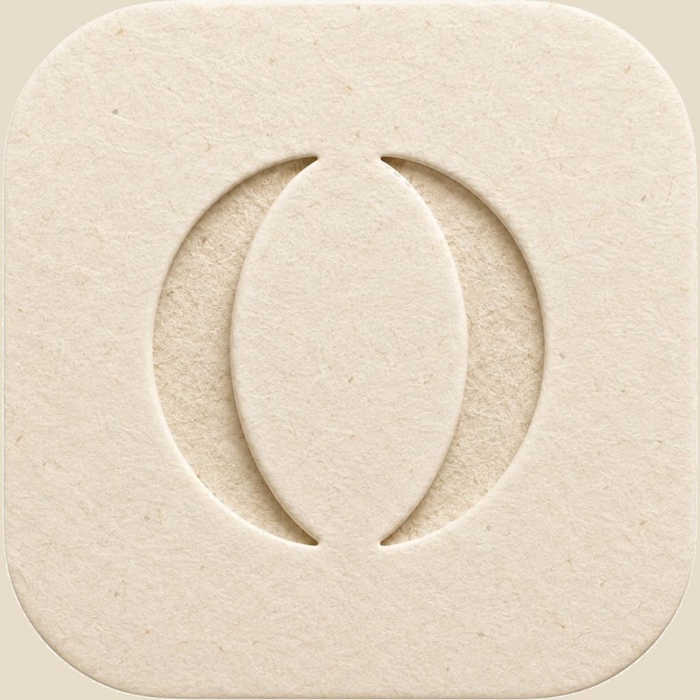

OurPhase
Understand Each OtherBeing known begins with being understood.
Press kit for Triple Virgo family sites. Warm paper, quiet ochre, matte walnut. OurPhase should feel like a place — not like technology.
Name, lockup, and mark
OurPhase — one word, capital O and P.
Lockup: Understand Each Other
Tagline: Being known begins with being understood.
The mark is two complete crescents facing one another. The space between them is the relationship. Each crescent is whole on its own. It is cut and pressed into paper — never chrome, never jewelry gold.
Paper, ochre, and walnut
Ochre is the accent. Walnut is the action. Ivory is the room. Never bright white or cool gray.
A journal serif and a quiet sans
Being known begins with being understood.
Wordmark and tagline: Source Serif 4 — warm, humanistic, not a fashion face.
Lockup and body: DM Sans. Lockup is uppercase, wide tracking, muted ochre.
Google Fonts:
family=Source+Serif+4 and
family=DM+Sans
Logo files
Use these as they are. Do not recolor, outline, or place the mark on charcoal or cool gray.


How to place it
Copy this folder onto triplevirgo.com, or link to https://ourphase.app/press-kit/.
CSS variables you can paste:
--ourphase-ivory: #F6F1E8;
--ourphase-ochre: #A28658;
--ourphase-walnut: #7A5840;
--ourphase-espresso: #534636;
--ourphase-font-serif: "Source Serif 4", Georgia, serif;
--ourphase-font-sans: "DM Sans", system-ui, sans-serif;
OurPhase is the earth-and-paper sibling. Do not dress it in MyPhase pearl or InPhase structure.
- No metallic gold, chrome, glass, or high gloss
- No bright white or cool gray rooms
- No extra-bold wordmark
- Phase and Season pigments stay in the app — they are not this brand